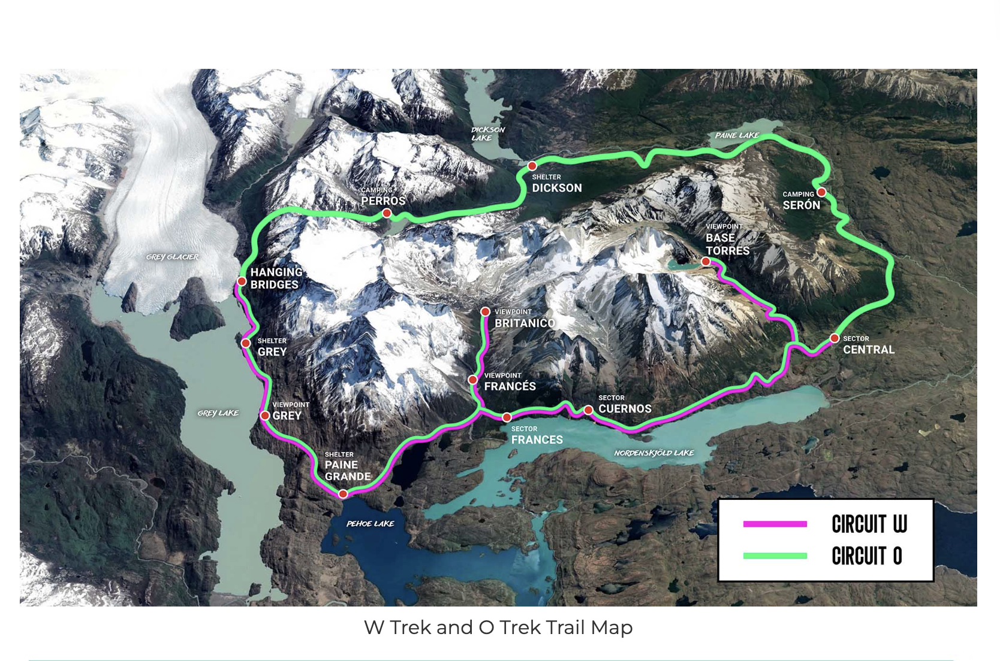

From Nikku, With Love
Hi everyone! I'm turning 30 this year, and there is genuinely nowhere I'd rather be than out on a trail with the people I love most. So here's the dream: five days hiking the W Trek through Torres del Paine — glaciers calving into impossibly turquoise lakes, granite towers piercing the sky, big open Patagonian light, and hopefully very little cell service. This is the kind of once-in-a-lifetime scenery you spend years chasing in photos online, and I want us to stand in front of it together.
I know this is a big ask. It's far, it's not cheap, and I'm sorry this invite is coming together later than I'd like — I've been trying to nail down the details before I brought it to you. My hope is that with it landing around Thanksgiving, more of us can actually get the time off together.
I'd plan every detail — you'd just need to show up with your boots on. And I want to be really clear: this is completely optional. No guilt, no pressure, no hurt feelings if this isn't the year for it. But I love you all, I love the outdoors, and I honestly can't think of a better way to spend turning 30 than watching the sun rise over the Towers with this exact group of people. Trips like this don't come around twice — and I am so, so excited at the thought of making these memories with this family.
Who's Invited
What It Actually Looks Like
Real photos from the W Trek route via FlashpackerConnect — glaciers, granite towers, and the refugios we'd actually sleep in. Views like this are exactly why I can't stop thinking about this trip.
%20copy.jpg)


Trip Snapshot
A self-guided 5-day version of the classic W Trek — we hike independently on well-marked trails, and the logistics (transport, permits, meals, lodging) are all handled. Tentative travel window is November 21–28, 2026, with the actual trek running November 23–27, right around Nikku's birthday and Thanksgiving week.
Map & Weather

Weather chart opens the trip page, where it's shown further down.
The Route
Day 1 — Paine Grande → Grey
Day 2 — Grey → Paine Grande
Day 3 — Paine Grande → French Valley
Day 4 — Los Cuernos/Francés → Torres Central
Day 5 — Base of the Towers → Puerto Natales
Trip FAQ
How difficult is it, and do I need prior experience?
- Day 1 (Base of the Towers): 22 km, 8–10 hrs, strenuous
- Day 2: 12 km, 4–5 hrs, moderate
- Day 3 (French Valley): 17 km, 6–7 hrs, demanding
- Day 4 (to Grey): 11 km, 4–4.5 hrs, moderate (+3–4 hrs optional suspension bridges)
- Day 5: 11 km, 4–4.5 hrs back to Paine Grande (or do the bridges in the morning, then return later)
What does "self-guided" mean, and who is it best for?
Do I need to carry my own gear?
Cost, Transparently
✅ Included
- Refugio lodging (shared bunk dorms, bedding provided)
- All meals — breakfast, box lunch, dinner
- Bus + catamaran transport in/out of the park
- Park entrance & shuttle tickets
❌ Not Included
- Flights to Chile (Puerto Natales / Punta Arenas)
- Travel insurance
- Porter service, if you want one (extra cost)
- Hotel night in Puerto Natales before/after trek
Us, Out There
A few of our hikes together so far — and a small preview of the memories I can't wait to make with all of you in Patagonia 📸